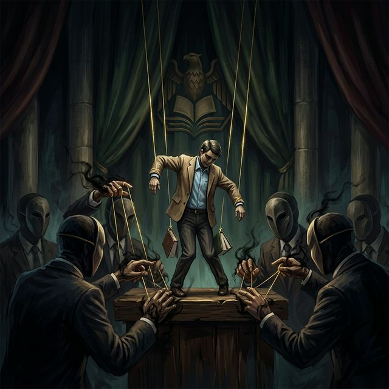

1. El Escenario de la Historia Predictiva
La "Historia Predictiva" —un marco analítico que fusiona la psicohistoria con la Teoría de Juegos— nos permite anticipar que el sistema de pensiones magisteriales en México se aproxima a un punto de ruptura crítico en el bienio 2025-2026. En este tablero, el Estado no es un observador pasivo, sino un "Game Master" que redefine las reglas para garantizar la estabilidad fiscal a costa de la seguridad social del docente. Comprender este ajedrez actuarial es el primer paso para una defensa soberana en Sonora.
2. La Jugada del Estado: Suma Cero
En 2025, el gobierno federal impulsó decretos que, bajo una retórica de beneficio social, plantean un escenario de "suma cero". Al proponer jubilaciones anticipadas con montos cerrados de 16 mil pesos, se busca comprar la paz administrativa inmediata hipotecando la viabilidad futura del fondo. En la termodinámica fiscal del sistema, cada peso desviado de la infraestructura educativa para cubrir déficits pensionarios mal gestionados es una pérdida neta para el magisterio sonorense.
3. Fragilidad Intergeneracional
El sistema está generando una fractura entre generaciones de docentes. Los nuevos ingresos, sujetos a los regímenes de cuentas individuales (AFORES) de la Ley 2007, enfrentan una vejez precaria, mientras que los regímenes anteriores se ven amenazados por la falta de sustentabilidad del fondo común. Esta erosión de la "Creencia Común" destruye la solidaridad gremial. Si el magisterio permite que el Estado divida sus intereses por edad, la "Fábrica de Ignorancia" administrativa habrá ganado una batalla decisiva.
4. La Captura del Corporativismo
El charrismo sindical, personificado en la dirigencia nacional del SNTE y sus réplicas estatales como la Sección 28 en Sonora, funciona como un aparato de contención. Su estrategia ha sido históricamente la "captura del aula" para fines político-partidistas. Al alinearse con la autoridad federal a cambio de prebendas, el sindicato oficialista deja de ser un defensor de los derechos para convertirse en el gestor de la sumisión docente. La liberación de las bases exige desmantelar esta mediación corrupta.

5. El Laberinto de la Alquimia Actuarial
Las recientes propuestas para incrementar la aportación patronal al 13.87% son representaciones de una "alquimia actuarial" que simula soluciones sin abordar la raíz: la abrogación de la Ley del ISSSTE de 2007. Se negocian porcentajes marginales mientras se mantienen acuerdos con fondos de inversión que lucran con el ahorro magisterial. Para el MS, aceptar estas migajas sin una reforma estructural profunda equivale a ceder la soberanía sobre el tiempo de vida dedicado al servicio educativo.
6. El Dilema del Desafío (Game of Chicken)
En la mesa de negociación, el magisterio se enfrenta a un "Juego del Cobarde" (Chicken Match). La resistencia magisterial, a través de la CNTE y las bases sonorenses, ha planteado una postura de no retroceso, advirtiendo incluso la necesidad de boicots estratégicos a eventos internacionales si no hay justicia laboral. En esta colisión de voluntades, el Estado apuesta por el desgaste físico del docente, mientras que nosotros apostamos por la firmeza de la conciencia colectiva.
7. Estrategia de Información Perfecta
A diferencia de épocas pasadas, el magisterio sonorense cuenta hoy con acceso a información técnica que neutraliza el engaño mediático institucional. La resistencia dinámica implica anticipar los movimientos del "Game Master" mediante el análisis presupuestal real. Si el Estado ofrece beneficios cosméticos, nuestra respuesta debe ser la auditoría constante. No estamos solicitando concesiones; estamos exigiendo la restitución de la certidumbre en el retiro que ya ha sido financiado por nuestro trabajo.
8. El Laberinto del Presupuesto Estatal
Para 2026, Sonora proyecta un presupuesto educativo histórico de más de 30 mil millones de pesos. Sin embargo, en un sistema de baja cohesión social (falta de Asabiyyah), el capital financiero se disuelve en la ineficiencia administrativa y el clientelismo sindical. El magisterio debe velar porque estos recursos se orienten a la soberanía pedagógica y tecnológica —especialmente ante los nuevos retos del Ciberbachillerato e IA— y no a fortalecer la burocracia estatal.
9. Praxis y Territorialización
La implementación de la Nueva Escuela Mexicana (NEM) en el territorio sonorense requiere una praxis que rompa con la estandarización fabril. Territorializar el aprendizaje significa que el aula deje de ser un espacio de simulación para convertirse en un nodo de resolución de problemas comunitarios. El docente debe apropiarse de la autonomía curricular como una herramienta de resistencia, transformando la técnica en conocimiento que sirva auténticamente al desarrollo de su comunidad.
10. El Horizonte de la Soberanía
El análisis concluye con una premisa innegociable: la pensión docente es la compensación diferida por una vida de servicio, y su defensa es un acto de soberanía intelectual. Mediante la inducción hacia atrás, hemos identificado que solo la coordinación desde las bases permitirá alterar el destino de precariedad que otros han diseñado para nosotros. El magisterio sonorense está listo para dar el paso definitivo: dejar de ser empleados de la fábrica para ser arquitectos de su propia libertad.